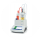

Любимые приборы
Любимые приборыНазвание
Статус

pH-метр Mettler-Toledo International, Inc. SevenCompact S220

Спектрофотометр Varian, Inc Cary 50 Bio

Титратор

Коагулометр Tcoag, KC 4 Delta
Коагулометр Tcoag, KC 4 Delta